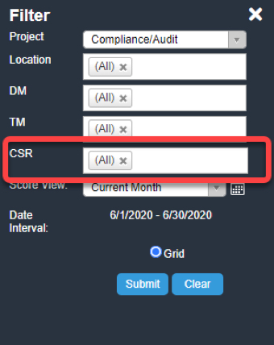

Acuity Performance Management System - Performant Recovery Manager's User Guide
System Login

When you login for the first time (simply enter the user name and password into the appropriate fields as shown in the screen shot above), you will be prompted to change the default password (typically P@ssw0rd) to one of your own (remember it or store it somewhere safe for future reference should you forget it).

At some point during or near the end of training, you should have received a user name and a default password to access Acuity. A special url has been set up for you to access Acuity -
https://performant-recovery.acuityapm.com/
Password Reset
-
To reset an employee's password, first select that employee from the
"CSR" filter on the left

-
Open the menu and select "Reset CSR Password"

-
Once clicking "Reset CSR Password", a prompt will appear asking you to
confirm the password change, along with what the new password will be

- To confirm the password change, simply click "OK"
Communications and Support
You can reach out to your supervisor by using the Chat feature accessible at the top of Acuity.
Communication may also be facilitated via Acuity's conventional Messaging feature accessible via the envelope icon. A round marker next to the envelope icon will indicate when a new message has been received.
Filters and Views

Filters located in Acuity's left panel - enabled or disabled based on role - determine what information is displayed in the main report window. The filter is expandable and collapsible.
To isolate specific data (location, DM, TM, CSR, or date range) use the filter. The data selection in the Filter panel is based on hierarchy. Example: Team Managers can view all CSRs on their teams. CSRs can only see their own data. To view historical performance, select a previous date range from the Score View filter.
TIP: after selecting filters, click the Submit button to run the new or modify the existing report.
Audit Status Description
Reviewing Audit Monitoring Forms
Pending Agent Review
To review the Audit Monitoring Forms that are in a Pending Agent Review status, select the IRS or Non-IRS Pending Review report.
- Click on the Reports tab.
- Select IRS or Non-IRS Pending Review report from the dropdown menu.
-
Click on Filter to expand the Filter panel.

- Select the Score View (date range). To select the date range, click on the dropdown menu.
-
Click Submit to run the report. The results will appear in the window
along with any CARs that are currently in process. CARs that require
your attention will have the following statuses:
- Pending Agent Review - these are new CARs that need to be reviewed.
- Pending Agent CAR Confirmation - this is to confirm that you have received Corrective Action from your manager.
- Click on the X to collapse the Filter panel. The report will be displayed in the window.
- Click on the Monitor ID # to open the CAR monitoring form with Pending Agent Review status.
-
Below is an example of the CAR monitoring form with the status: Pending
Agent Review. You can either agree with ALL observations and point
totals on the form or disagree with at least one of the findings or
point on the form.
- Agree - click on the first radio button labeled "I agree with ALL observations and point totals on this form" and click Submit Acknowledgement / Dispute to Manager button. This releases the form to your manager. Once the form is released to the manager, it can no longer be edited by you. Note: If you click Close, the form will close and remain in Pending Agent Review status.
-
Disagree - click on the second radio button labeled "I disagree
with at least one of the findings, or points assessed above".
Check the box below the finding(s) that are being disputed, enter
the dispute reason in the Agent Dispute text box. If the box next
to the finding is not checked, this means that you agree with that
finding or point total. Once the finding(s) are disputed, click
Submit Acknowledgement / Dispute to Manager button. This releases
the form to your manager. Once the form is released to the manager,
it can no longer be edited by you. Note: If you click Close, the
form will close and remain in Pending Agent Review status.
In the example below the agent is disputing 1 of the 3 findings.
-
After the Submit Acknowledgement / Dispute to Manager button is clicked,
you will navigate back to the IRS or Non-IRS Pending Review report.
Click Submit again to re-run the report, this will display CAR's new
status:
- Pending Corrective Action - if you agreed with ALL observations and point totals.
- Pending Dispute Review - if you disagreed with at least one finding.
The next step in the process is for your Manager and Compliance to review the CAR.- If you agreed with the findings, your Manager will perform the Corrective Action.
-
If you disagreed with any observation, your Manager will review the disputed finding(s).
-
If they find the dispute Invalid (in other words, they disagree
with you), they will perform the Corrective Action.
- If they find the dispute Valid (in other words, they agree with you), the CAR will be routed to Compliance for dispute review. Once Compliance completes the dispute review, the CAR will be returned to the manager for the Corrective Action Step/notification that the dispute review is complete.
Once the steps above are complete, the CAR will be returned to you for one last step. The last step in the process is to confirm that you have received Corrective Action Training from your manager. -
If they find the dispute Invalid (in other words, they disagree
with you), they will perform the Corrective Action.
Pending Agent CAR Confirmation
To review the Audit Monitoring Forms that are in a Pending Agent CAR
Confirmation status, select and run the IRS or Non-IRS Pending Review
report. Select a CAR with this status and click on the Monitor ID # to
open the form.
- Check the box "I have received corrective action training from my manager".
-
Click Confirm Receipt of Training button to complete the CAR.
After the Confirm Receipt of Training button is clicked, you will navigate back to the IRS or Non-IRS Pending Review report. Click Submit again to re-run the report, the CAR will no longer appear in the report as the status is now Complete.
Reports
Report Menu
Reports are enabled or disabled based on the user's role and permissions. There are 4 reports that you will have access:
Monitors
- IRS or Non-IRS Audit Log - this is a list of all CAR details within select date range.
-
RS or Non-IRS Point Summary - this report provides a summary list for the following:
- Date Range Points - These are the points of the completed & pending CARs for the selected date range.
- Rolling 90-Day Points - These are the completed & pending CAR points from the end date of the date range and any points going back 90 days (this number includes the Date Range Points). Note: if the date range end date is greater than the current date, the current date is used as the 90-day reference point.
- Pending Points - These are CAR points that are in a pending status and not yet complete.
- In-Draft Pending Points - These points are only visible for the Compliance and Admin teams.
- IRS or Non-IRS Pending Review - This is the report for any CARs that are in the review stage and not yet complete for the selected date range.
- IRS or Non-IRS Findings - This report lists all Findings for every CAR (regardless of the status) in the selected date range.
Report Generation:
- Click on the Reports tab.
- Select the report from the drop-down menu.
-
Click the Filters tab to expand the Filter Panel. Note: Project,
Location, DM, TM, and CSR will be pre-populated as you will only
be able to see your data.
- Select the Score View (date range) either from the drop-down menu. For a custom date range, click on the calendar icon and select a start and end date.
- Click Submit to run the report.
-
Click the X to collapse the Filter panel. The report results will be displayed in the window.
Report Navigation Tips:
- Reports have Search capability to further narrow down the report results.
-
The data can be sorted by clicking the arrows after the column heading.

Back to Top